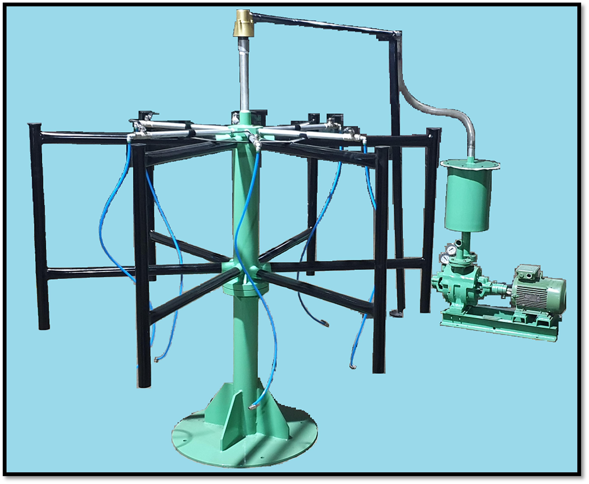

Machines Built for Production Floors
Each machine is engineered to meet the demands of modern automobile component manufacturing with precision, reliability, and ease of operation.

Valve Fixing Machine
A high-efficiency, automated system designed for the precise insertion and securing of valve cores into cured rubber inner tubes. Featuring robust construction and intuitive controls, the machine ensures consistent, airtight assembly, significantly increasing production throughput and reducing manual labor in post-curing operations.
View Details
Tube Curing Press
A high-precision hydraulic system engineered for the uniform vulcanization of inner tubes. Utilizing advanced thermal regulation and synchronized hydraulic pressure control, the machine ensures consistent curing profiles, resulting in structural integrity and durability across a comprehensive range of tube dimensions, from high-pressure bicycle tubes to large-scale Off-The-Road (OTR) applications.
View Details
Tube Deflation Unit
Hydraulic tube end forming machine capable of expanding, reducing, flaring, and beading operations. Multi-stage forming achievable in a single setup.
View Details